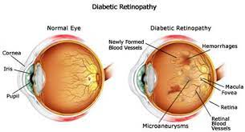

Diabetic Retinopathy

SYMPTOMS:
Symptoms of diabetic retinopathy include:
-
Blurred or distorted vision.
-
New color blindness or seeing colors as faded.
-
Poor night vision (night blindness).
-
Small dark spots (eye floaters) or streaks in your vision.
-
Trouble reading or seeing faraway objects.
CAUSES
Diabetes can cause multiple eye diseases including cataracts, glaucoma, and diabetic retinopathy which is defined as damage to the retinal vessels of the eye. These damage vessels can lead to poor blood flow (ischemia), inflammation, and ultimately legal blindness if not treated.
DIAGNOSIS
An eye doctor (ophthalmologist) can diagnose diabetic retinopathy during a simple exam.
- Visual acuity: Acuity refers to how clearly you can see.
-
Intraocular pressure to make sure there are no signs of glaucoma.
-
Eye muscle function: Muscle function refers to how well you can move your eyes.
-
Peripheral vision: Peripheral vision is seeing from the sides of your eyes.
-
Pupil response: This assessment looks at how your pupils react to light.
TREATMENTS
In the early stages of the disease, your healthcare provider may use a wait-and-see approach especially in the setting of good vision. During this phase, you have regular eye exams but don’t need further treatment. Some people need eye exams every two to four months.
- Injections: Your healthcare provider injects medication, such as anti-vascular endothelial growth factor drugs or corticosteroids, into your eye. These medicines help slow down disease progression and improve vision.
-
Laser surgery: Your healthcare provider uses a laser to reduce swelling in your retina and new blood vessel growth. The lasers shrink blood vessels or stop leaking.
-
Vitrectomy: Your healthcare provider may recommend this outpatient eye surgery if you have cloudy vision due to leaking blood vessels. During a vitrectomy, the eye doctor makes a small incision in the eye. The provider can repair the blood vessels and remove scar tissue.